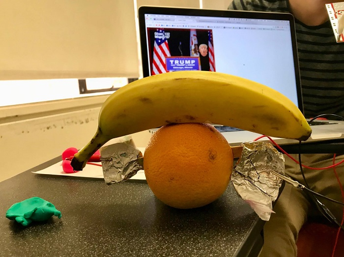

For my game, I decided to go with the theme of watering a flower and avoiding bugs.
I really love to make graphics of plants and food smiling, so this was a fun little project for me. The graphics are little sketches of what would probably normally be pixel art, but even still, I liked the way that the game came out looking in the end.
At first, I really wanted to write a game where the flower would be walking around with an animated walk cycle, and would use its leaves as swords to fend off bugs. It was a bit too ambitious for me given my time restraints, and I instead decided to go with the simple "things fall but you gotta catch the right thing" type of game.
I'm not incredibly pleased with the end product, since it's fairly simple, but I feel that it came together nicely given the amount of time and complexity of the project. I especially like that I had the bugs move in little paths of their own depending on some random variables.
Lastly, here is an image of the controller that my group made in class with our makey-makey! We used my breakout game with this controller, mapping one side of foil to A, and the other side of the foil to D. I also later on created a "potato controller" literally with 8 potatoes as different mouse keys.
